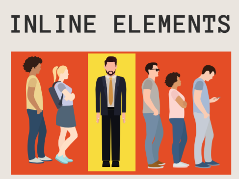

ID e Class
Atributos são conteúdos adicionados à tag de abertura de um elemento e podem ser usados de várias maneiras diferentes, desde fornecer informações até alterar o estilo. Os atributos são compostos das duas partes a seguir:
- O nome do atributo
- O valor do atributo
ID
é realmente útil quando você usa um elemento mais de uma vez.
Quando os usuários visitam nosso site, queremos que eles possam clicar em um link e que a página role automaticamente para uma seção específica. Para criar um link para um destino na mesma página, devemos fornecer ao destino um id , como este:Elementos Block vs Inline
Os termos se referem a como um determinado elemento vai encaixar no fluxo de conteúdo do documento
Block (Bloco) - É o amigo que não gosta de dividir o chocolate.
Inline (Linha) - É o amigo da galera, compartilha o chocolate.
Spam e Divs
Div - são elemetos de divisão do conteúdos da página, ou seja, é um contêiner "transparente" para agrupar coisas. Além disso é um elemento block
Spam - contém pequenos trechos de texto ou outro HTML. Eles são usados para separar pequenos pedaços de conteúdo que estão na mesma linha de outro conteúdo.
É melhor usar um <spam></spam> elemento quando você deseja direcionar uma parte específica do conteúdo que está embutido ou na mesma linha que outro texto.
Não se apegue as Divs
Vai chegar um momento que as div se tornaram Deus para você. Então por isso é bom usar-la em último caso. Nisso existem outras tags que fazem a mesma coisa da div, mas há significado semântico.
- Main - como o próprio elemento já diz, principal. Usamos muito para o definir o principal conteúdo da página.
- Nav - usamos para definir o conteúdo de barras de navegação, ou seja, tudo que incluir links.
- Section - apenas representa uma seção. Como uma div pode ser incluída em qualquer lugar, mas agora terá um significado.
- Aside - algo que realmente não é essencial ao conteúdo. Aqui temos as barras laterais
- Article - definir como artigo, o conteúdo da página uma parte indenpedente do documento. Muito usado em blogs
- Header - é para cabelhaço.
- Footer - é para o rodapé.